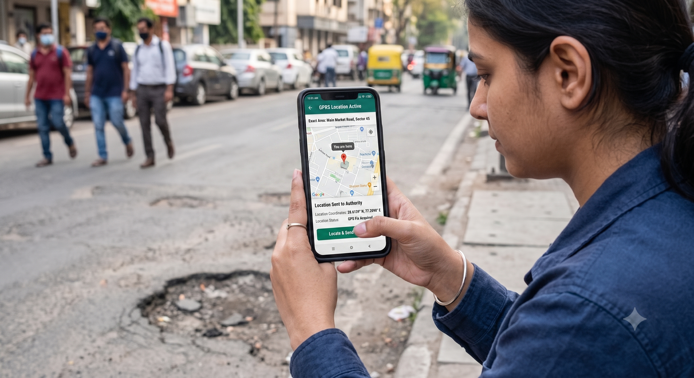
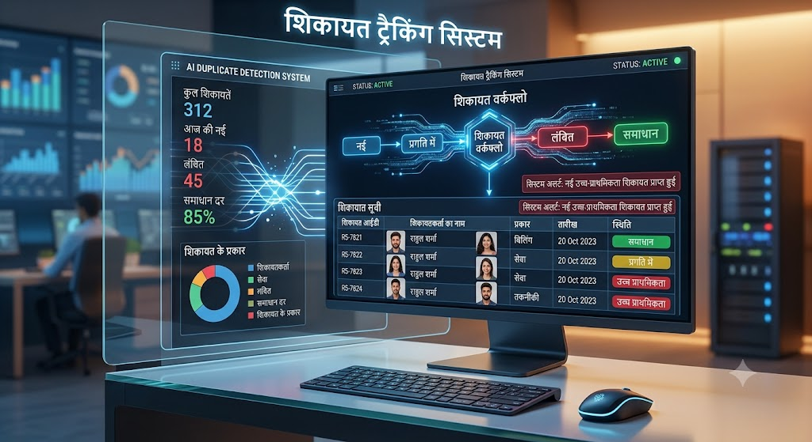

CampusCare
College Civic Grievance & Issue Resolution System
An enterprise-grade civic platform integrating Google Gemini 1.5 Flash Vision AI, 2D Leaflet geospatial mapping, 4-step live audit stepper, and automated SLA compliance governance.
Problem Statement
Inefficiencies and service breakdown in traditional campus civic management.
High Volume of Campus Breakdown Events
In a college campus spanning over 30+ acres with hostels, specialized IT labs, libraries, and mess facilities, civic issues (water leakages, electrical hazards, broken desks, sanitation issues) occur on a continuous daily basis.
Failure of Manual & Informal Reporting Channels
Existing practices rely on physical register logbooks in warden offices, verbal notifications, or chaotic WhatsApp groups. As a result, critical safety hazards get buried, tickets remain unresolved for weeks, and students lose faith in institutional governance.
Problem Identification: Root Causes
Detailed breakdown of the 4 structural bottlenecks identified in campus grievance handling.
Vague Descriptions & Missing Proof
Technicians receive vague complaints like "switch not working in Block B" without photos, specific room numbers, or hazard severity, wasting hours finding the fault.
Zero Tracking & Student Frustration
Once a complaint is submitted, students have no visibility into ticket status, who has been assigned, or expected resolution turnaround time (SLA).
Ticket Clutter & Duplicate Flooding
When a central asset fails (e.g. library Wi-Fi router or floor water cooler), 40+ students submit identical complaints, overwhelming the desk.
Lack of Auditing & Accreditation Data
Deans and HODs have no metrics or turnaround logs to assess contractor performance or submit for NAAC Criterion 5 and NIRF compliance.
Proposed Solution: CampusCare Platform
An intelligent, transparent civic resolution system tailored for college campuses.
Mandatory Proof & AI Vision Classification
Compulsory photo/video upload. Google Gemini AI vision inspects image bytes and automatically classifies category, priority, and draft title.
Geospatial 2D Campus Map & Geofencing
Interactive Leaflet.js map pinned across all Academic Blocks, Hostels, and Grounds within a 1.5 km campus geofence for pinpoint location.
Transparent 4-Step Live Tracking Stepper
Amazon-style progress stepper (Pending → In Progress → Resolved → Closed) with immutable remarks and 5-star student review.
Anti-Duplicate Engine & 1-Click Upvoting
Intercepts duplicate tickets at the same location; allows students to 1-click upvote existing issues to elevate administrative priority.
User Journey & Grievance Lifecycle
End-to-end operational journey from issue detection to institutional closure.
Discovery & Snap
Student discovers broken fixture, takes photo/video, and triggers AI Vision intake.
AI Scan & Duplicate
Gemini AI predicts category. System checks location vectors: student can 1-Click Upvote.
Intake & Dispatch
Ticket logged in DB. Async HTML email sent to Admin & HOD. Added to 2D campus map.
Staff Delegation
Admin delegates ticket to Department Maintenance In-Charge with target SLA deadline.
Resolution & Review
Technician resolves fault. Student inspects work, submits 1-5 star review, and closes ticket.
System Architecture (3-Tier High-Level Design)
Decoupled, modular, and resilient client-server interaction model.
Presentation Tier
- • Student Portal: Grievance creation, AI detection, 4-step stepper, 2D map, feedback.
- • Staff Resolution Desk: Assigned queue, status changer, action logs.
- • Admin Control Center: Multi-filter table, assignment modal, Chart.js KPIs, CSV export.
Application Tier (Flask)
- • Modular Blueprints: Auth (6), Complaints (11), Admin (13), Staff (7).
- • Security Middleware: PyJWT HS256 stateless tokens with 24h expiration.
- • Service Integrations: Gemini AI Vision & Asynchronous Multi-threaded SMTP mailer.
Database & Storage Tier
- • Universal Adapter: Seamless execution across MySQL, MSSQL, or SQLite.
- • 7 Normalized Tables: 3NF schema with foreign key cascades and check constraints.
- • File Storage: UUID hashed multipart upload folder for images/videos.
Technical Architecture: Deep Dive
Universal multi-engine database layer, relational integrity, and transaction management.
7 Normalized Relational Tables
Universal DB Adapter (`backend/db.py`)
- • Dynamic Regex Translation: Automatically rewrites SQL queries at runtime between MySQL (
TIMESTAMPDIFF,LIMIT/OFFSET,%s), SQL Server (DATEDIFF,OFFSET-FETCH,?), and SQLite (WAL mode). - • Zero Migration Headache: Developers can test locally with SQLite, college labs can run on XAMPP MySQL, and production can scale on Azure SQL.
- • ACID Atomic Transactions: Uses
execute_transaction()context manager so complaint status changes and timeline logs succeed or roll back together. - • Composite Performance Indexes: Non-clustered indexes on
(Status, CategoryID, Priority, CreatedAt).
Open Source Frameworks & Libraries
Robust open-source technologies powering client and server architectures.
Third-Party API Integrations
External cognitive, geospatial, and communication services integrated into CampusCare.
Google Gemini 1.5 Flash Vision API
Accepts uploaded JPEG/PNG/video frames. Uses multimodal reasoning to output JSON predicting problem category, priority, and structured title.
OpenStreetMap (OSM) Tiles API
Powers Leaflet map background rendering with high-resolution satellite/street raster tiles covering KIET campus boundary coordinates.
Google SMTP Mail Service API
Dispatches multi-threaded, asynchronous HTML formatted email alerts with priority color badges to administrators via TLS Port 587.
W3C HTML5 Geolocation API
Captures live device latitude and longitude from student smartphones and verifies within the campus 1.5 km geofence radius.
Project Images: Live User Interface
Real screenshots and interface elements from the deployed CampusCare portal.

1. Camera Evidence Intake
Drag-drop or live mobile camera capture of campus breakdowns.
2. Gemini AI Analysis
Visual inference predicting category, priority, and structured title.

3. 2D Leaflet Campus Map
Color-coded GPS status pins mapped across university blocks.

4. Live Tracking Stepper
4-step progress stepper with technician remarks and feedback rating.